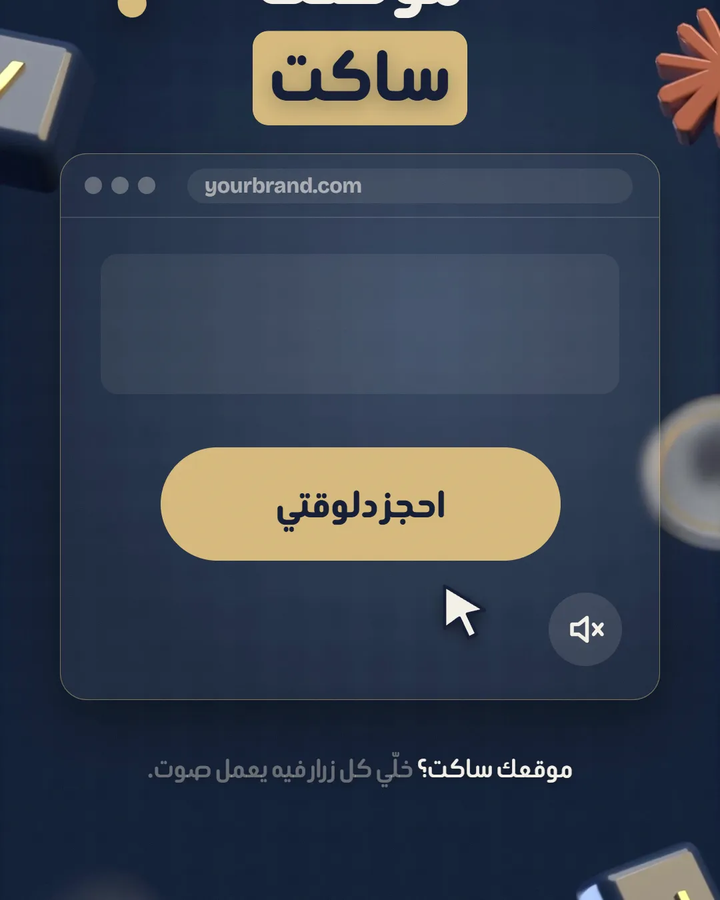
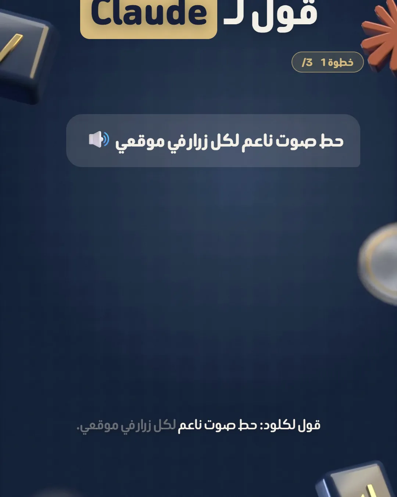
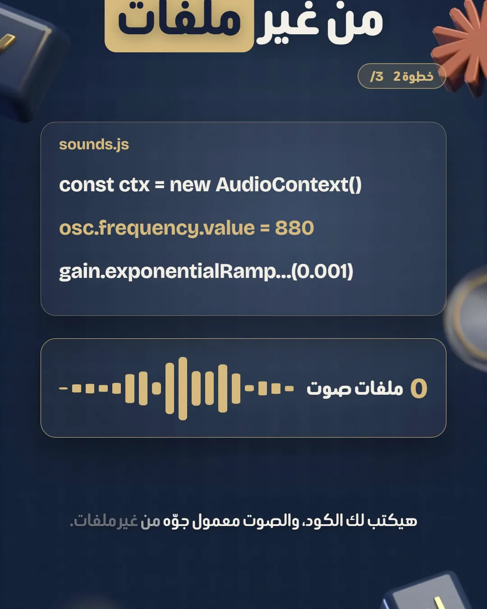
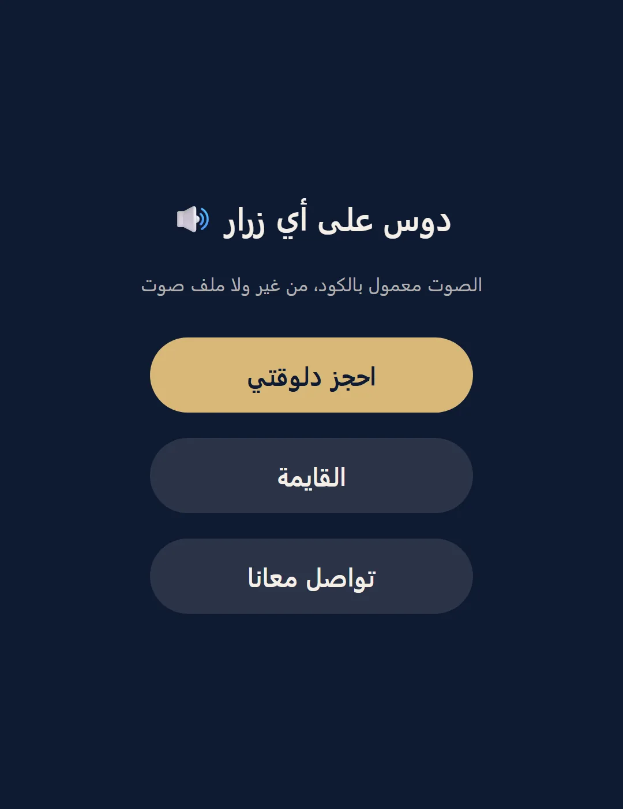
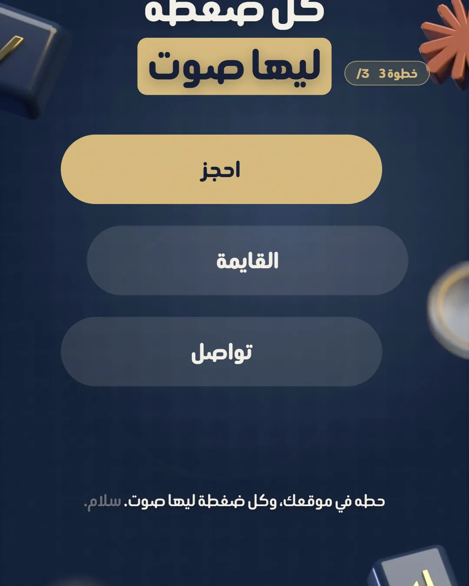

موقعــكساكـــت؟
خلّي كل زرار في موقعك يعمل صوت ناعم لما حد يدوس عليه. Claude بيكتب الكود، والصوت نفسه معمول جوّه الكود، فمش محتاج تدوّر على ملفات صوت ولا تكون مبرمج.


- 01
الفكرة في سطر
المتصفح عنده أداة اسمها Web Audio API بتطلّع صوت من الكود نفسه (نغمة قصيرة بتختفي بسرعة). يعني «تِك» ناعمة مع كل ضغطة، من غير ما ترفع ولا ملف mp3. وفي قاعدة مهمة: المتصفحات مش بتشغّل صوت غير بعد ما الزائر يدوس على حاجة، وده بالظبط اللي إحنا عايزينه.
MDN: Web Audio API ↗
من الريل: زرار الحجز وهو بيتداس - 02
اطلبها من Claude
افتح شات جديد في Claude وانسخ البرومبت ده، وغيّر اللي بين القوسين:
عايز صوت ناعم وقصير لكل زرار في موقعي لما حد يدوس عليه. اعمله بالـ Web Audio API جوّه الكود (من غير ملفات صوت)، نغمة مختلفة سنة لكل نوع زرار، ومستوى صوت هادي. موقعي معمول على [Webflow / WordPress / HTML عادي]. اعملي صفحة تجربة فيها 3 زراير أجرّب عليها الأول، وبعدين اديني الكود اللي ألصقه في موقعي وقولي أحطه فين بالظبط.
من الريل: الطلب في شات عادي - 03
جرّب قبل ما تحطه
Claude هيعملك صفحة تجربة تشتغل جنب الشات (Artifact) وتقدر تدوس على الزراير وتسمع. لو الصوت عالي أو حاد قوله «وطّي الصوت» أو «خليه أنعم»، ولما يعجبك انسخ الكود من زرار النسخ.
شرح Anthropic: يعني إيه Artifact ↗
من الريل: الكود والصوت معمول جوّاه - 04
اسمعها دلوقتي
دي صفحة تجربة حقيقية عملناها بنفس الطريقة: 3 زراير، كل واحد ليه نغمة. افتحها من الموبايل ودوس عليهم: hossovisuals.online/site-sounds/demo.html
افتح صفحة التجربة ↗
صفحة التجربة الحقيقية: دوس على أي زرار وهتسمع الصوت - 05
حطه في موقعك
الصق الكود في المكان اللي Claude قالك عليه (في Webflow مثلاً: Site settings ← Custom code ← قبل </body>، وفي WordPress عن طريق بلجن بيضيف كود للفوتر). انشر، وجرّب من الموبايل والكمبيوتر.

من الريل: كل ضغطة ليها صوت
نصايح صغيرة
- خلّي الصوت هادي وقصير جداً (أقل من ربع ثانية). الصوت العالي بيضايق الزائر بدل ما يفرّحه.
- متشغّلش صوت أول ما الصفحة تفتح: المتصفح هيمنعه، وكمان مزعج.
- عايز موقع كامل بالحركة والأصوات دي لبراندك؟ ابعتلي على الواتساب wa.me/971556226197 وأقولك السعر حسب اللي محتاجه.
عايز حد يعملهولك؟
مش فاضي تتعلم وتعمل بنفسك؟ أنا بعمل ريلز لبراندك بنفس الطريقة اللي بشرحها هنا.